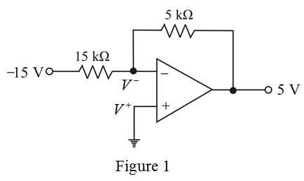

Consider an ideal op amp with,
Resistorsis used create a  supply from areference.
supply from areference.
Determine the gain of the inverting op-amp.
Therefore,and.
Consider an ideal op amp with,
Resistorsis used create a supply from areference.
Determine the gain of the inverting op-amp.
Therefore,and.
Sketch the ideal op amp.

From Figure 1, the voltage at the inverting terminal and non-inverting terminal are equal.
Determine the voltages at the ends of the  resistor.
resistor.
From Figure 1, the voltage at the starting end of  resistor is.
resistor is.
The voltage at the ending end of  resistor is
resistor is .
.
Therefore, the voltage at the starting end of  resistor is
resistor is .
.
The voltage at the ending end of  resistor is
resistor is .
.
Consider the resistors are  resistors, whose actual values are bounded by nominal values by .
resistors, whose actual values are bounded by nominal values by .
Determine the resistance with tolerance to  variation.
variation.
Determine the resistance with tolerance to variation.
Determine the limits of the output voltage produced.
Therefore, output voltage range is.
Consider the tolerance to the input supply is .
.
Determine the input voltage variation with  tolerance.
tolerance.
Therefore, the range of output voltages is.